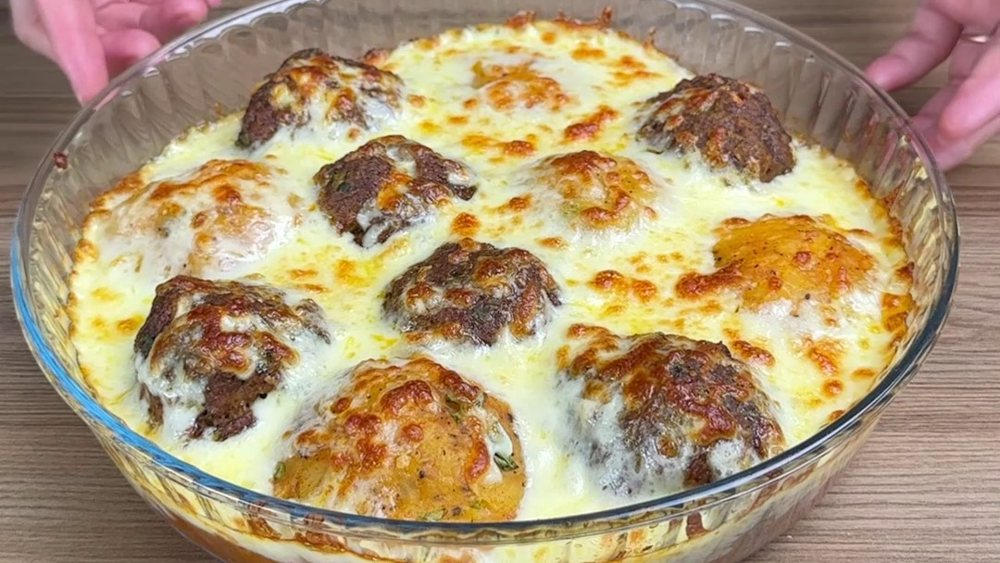

Carnes · Bovinos
Almôndegas de carne com queijo

Ingredientes
- 500 g de patinho moído
- 1 ovo pequeno
- 30 g de aveia fina
- 1 dente de alho
- 300 g de passata
- 80 g de muçarela
- Sal, pimenta e orégano
Modo de preparo
- Misture a carne com ovo, aveia, alho e temperos.
- Modele aproximadamente 16 almôndegas.
- Asse a 200 °C por cerca de 15–20 minutos, até atingirem 71 °C no centro.
- Distribua em quatro potes com molho de tomate e queijo.
- Resfrie e congele.
Observação
Ficam ótimas com arroz, legumes ou batata assada.